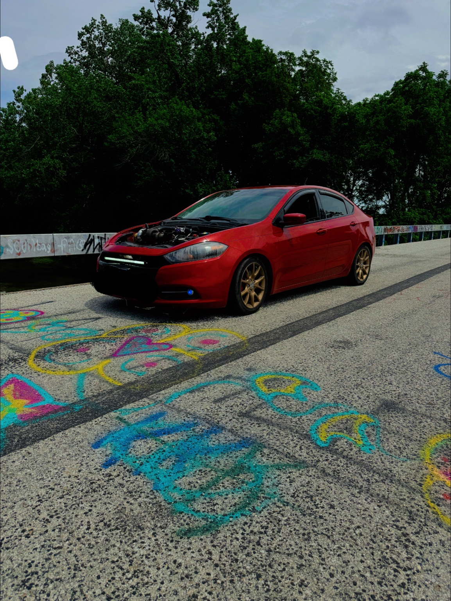
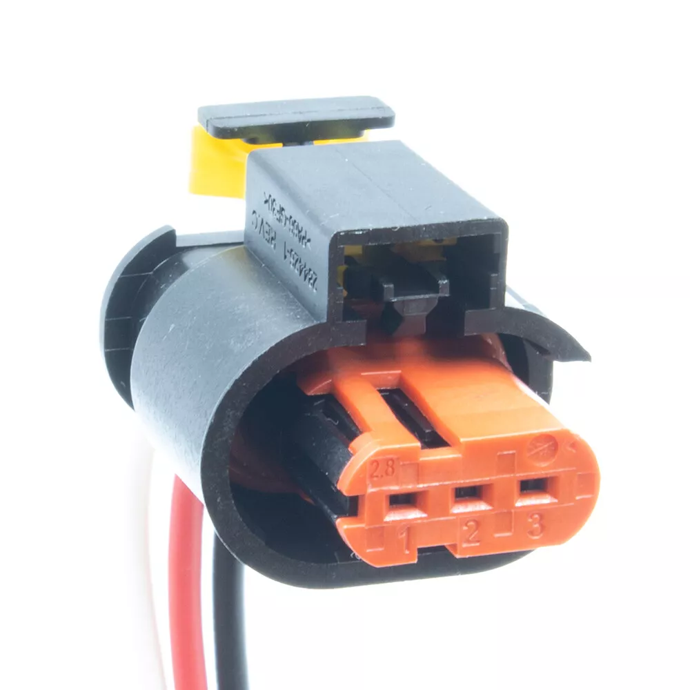
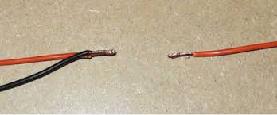
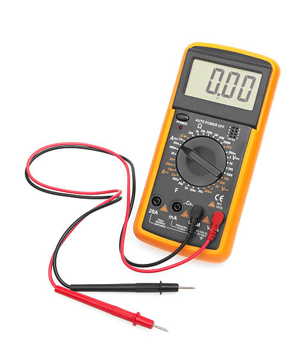

Overview & Purpose
This guide provides a comprehensive walkthrough for installing a custom ignition cut-off system on your 2013 Dodge Dart 2.0L. By following these steps, you'll be able to manually control your engine's ignition using a push button inside your car, enabling features like launch control or two-step functionality.
Tools & Materials Needed
Tools:
- Wire Stripper/Cutter
- Screwdrivers
- Multimeter
- Soldering Iron (optional)
- Heat Gun (optional)
Materials:
- 5-Pin Relay (1)
- Push Button Switch (1)
- 12V Power Wire (Red)
- Ground Wire (Black)
- Signal Wire (Dark Green/Orange)
- Wire Connectors
- Heat Shrink Tubing
- Fuse Tap (optional)
- Wire Loom (optional)
- Electrical Tape
Step-by-Step Installation
Step 1: Identify the Signal Wire
Locate the ignition coil pack in your engine bay. Identify the signal wire on each coil pack, which is typically the dark green/orange wire (rightmost wire on the connector).
Step 2: Cut the Signal Wire
Ensure the engine is off and the battery is disconnected. Carefully cut the signal wire on each ignition coil, leaving enough length on both ends to connect to the relay.
Step 3: Wiring the 5-Pin Relay
Wire the relay as follows:
- Pin 85 (Ground): Connect to a solid ground point.
- Pin 86 (Trigger): Connect to the push button's trigger wire.
- Pin 30 (From ECU): Connect to the ECU side of the cut signal wires.
- Pin 87a (To Coils): Connect to the coil side of the cut signal wires.
- Pin 87: Not used in this setup.
Step 4: Installing the Push Button Inside the Car
Choose a convenient location inside your car to mount the push button. Wire the button as follows:
- Terminal 1: Connect to a 12V ignition power source (use a fuse tap if necessary).
- Terminal 2: Connect to Pin 86 on the relay.
Step 5: Testing the System
Reconnect the battery and start your car. Press the push button to activate the ignition cut-off system. The engine should either stall or limit RPMs based on your setup. Release the button to resume normal operation.
Final Checklist
- All connections are secure and insulated.
- Push button is correctly wired and mounted.
- Relay is properly wired and grounded.
- Wires are protected and routed safely.
- System has been tested and functions as intended.
Troubleshooting Guide
Issue: Engine doesn't start after installation.
Solution: Check that the signal wires are properly connected through the relay and that all grounds are secure.
Issue: Push button doesn't activate the cut-off system.
Solution: Ensure the button is receiving 12V power and that the trigger wire to Pin 86 is connected.
Issue: Engine cuts off unexpectedly.
Solution: Inspect the relay for any faults and verify that the wiring matches the schematic.